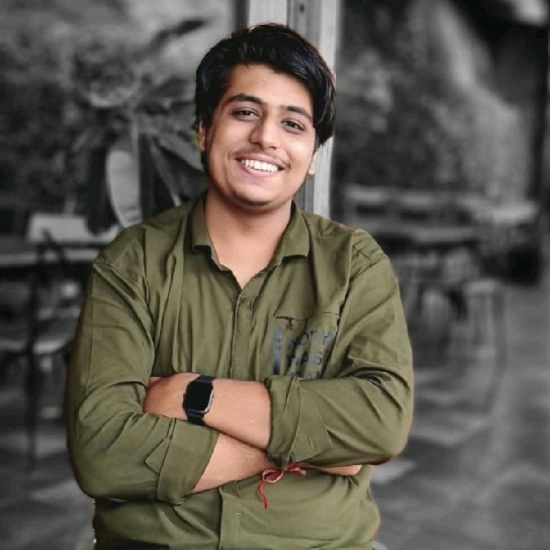

Hello, I'm Ishaan
AV & Control System Programmer | Web Developer
Welcome to my portfolio. Here, you can explore my projects, skills, and experience.
About Me
I have done my Bachlores of technology in Computer Science engineering with specialization in AI&ML.
I have also done various project during the college.
Apart from it i am skilled in Machine learning, Python and Front end development.
I am also familiar with the CS fundamental concepts like DBMS,Computer Networks, OS, Data Structures and Algorithms.
I am always ready to learn new things and collaborate with peoples.
Skills
- Python
- SQL
- C++
- AMX & BSS Programming
- Node-RED & Docker
- React, HTML, CSS, JavaScript
- Networking & Serial Communication
Projects
- Driver Drowsiness Detection System The Driver Drowsiness Detection project employs Machine Learning (ML) to
improve road safety by actively monitoring drivers and issuing alerts when
signs of drowsiness or fatigue are detected. By harnessing ML algorithms and
computer vision methods, this initiative enables instant analysis of facial and
behavioral cues, allowing for the timely identification and mitigation of risks
associated with driving while drowsy.
View Project
- Text Summarization using NLTK Text summarization is an NLP technique that extracts text from a large
amount of data. It helps in creating a shorter version of the large text
available.
View Project
Certifications
- NetLinx Programming Level 1 & 2
- MUSE Controller Training
- Python Essential from Cisco
- Yamaha ProAV Specialist Level - 1
More on LinkedIn